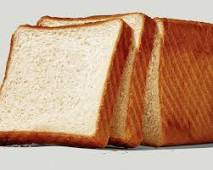

A very boring and generic bread.

Ingredients:
- water
- yeast
- salt
- Some boring flour
Directions:
- Start oven at 200 degrees celcius
- Mix together wather with the yeast untill it's a homogenuous mixture.
- Add salt until it's to salty to eat.
- Add flour until the dough is so dry it's not sticking to your fingers anymore.
- Put some plastic wrap on top and let it rest for 2 hours.
- Bake it in the oven for 10 minutes and serve imediatly.